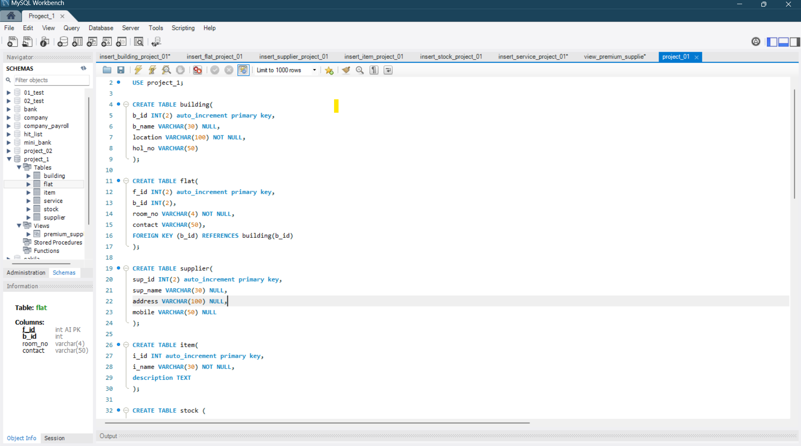

SQL Database & Architecture Projects
A deep dive into my database schemas, complex entity relationships, and script optimizations.
1. Student Management Database System
This project focuses on building a complete data infrastructure for managing educational institution records. I developed an optimal relational model to remove redundancy, handling tracking metrics for students, courses, enrollments, and performance scores seamlessly.
Technical Implementations & Code Screenshots:

Entity-Relationship Diagram (ERD): Mapping tables, structural cardinalities, primary keys, and foreign key constraints.
.png)
DML & DDL Queries: Core scripts running structured queries, managing records, and utilizing complex conditional logic.
2. Database Script Execution & Optimization Pipeline
Beyond table designs, this project showcases my environment configurations in MySQL Workbench. I wrote optimization scripts to ensure queries run efficiently on larger data lookups, focusing on transaction processing speeds.
Technical Implementations & Code Screenshots:

Workbench Environment: Setting up live instances, performance dashboards, and executing direct console scripts.

Complex Subqueries: Implementing table filtering calculations, multiple joins, and custom conditional groupings.